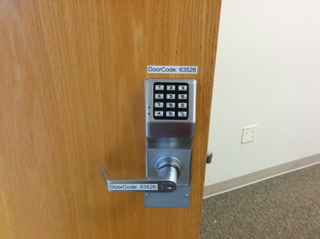

Beyond Module Security Updates
How to Really Secure Your Drupal Sites
Presentation by Greg Schnippel at Drupal GovCon, August 22nd, 2018
INTRODUCTION
Hello
- Technical Architect
- 15+ years experience
- Battle-tested veteran


Source: http://map.norsecorp.com
GOALS
- How to Approach Security
- Layers of Security
- Security Baseline
- Recommendations
HOW TO APPROACH SECURITY
Key Questions
- What is the threat and what is my risk tolerance?
- What security measures should I implement to mitigate these risks?
- What costs / complexity will they introduce?
- How will my users respond?

Motivations
Why would hackers target my site?
- Graffiti
- Spam / SEO manipulation
- Botnet
- Bitcoin Mining
- User / Financial Data
- Targeted attack / DDOS
Key Questions
- What is the threat and what is my risk tolerance?
- What security measures should I implement to mitigate these risks?
- What costs / complexity will they introduce?
- How will my users respond?
Balancing Costs / Complexity
- How complicated / expensive will this measure be to setup?
- How much overhead will this introduce into my operations?
Balancing Security and User Behavior
Balancing Security and User Behavior
- How to mitigate user avoidance and compensation behavior?
- How to account for user risk homeostasis
Recommended: Schneier on Security
Framework
EASY SETUP
(1 star, requires specialized resources -> 5 stars, easy to setup, drop-in solution)LOW COMPLEXITY
(1 star, should cautiously rollout and prepare for conflicts -> 5, no expected conflicts)USER BALANCE
(1, users will have to be trained and adjust behavior -> 5, users will never know its there)GOALS
How to Approach Security- Layers of Security
- Security Baseline
- Recommendations
Layers of Security
Physical
Personnel
Network
Web Server
Headers
PHP
Code
Database
Drupal
User Generated Content
GOALS
How to Approach SecurityLayers of Security- Security Baseline
- Recommendations
BASELINE
1. Update all the Things
2. Eliminate Unused Components
3. Monitor and Scan
4. File Permissions
[root@localhost]cd /path_to_drupal_installation
[root@localhost]chown -R greg:www-data .
[root@localhost]find . -type d -exec chmod u=rwx,g=rx,o= '{}' \;
[root@localhost]find . -type f -exec chmod u=rw,g=r,o= '{}' \;
[root@localhost]cd /path_to_drupal_installation/sites
[root@localhost]find . -type d -name files -exec chmod ug=rwx,o= '{}' \;
[root@localhost]for d in ./*/files
do
find $d -type d -exec chmod ug=rwx,o= '{}' \;
find $d -type f -exec chmod ug=rw,o= '{}' \;
done
Securing file permissions and ownershiphttps://www.drupal.org/node/244924
5. Have Reliable Backups
Offline Backups
Version Control (ex. Git)
6. Use HTTPS


BASELINE
- Keep up with All Updates
- Monitor and Scan
- Eliminate Unused Components
- File Permissions
- Have Reliable Backups
- Use HTTPs
GOALS
How to Approach SecurityLayers of SecuritySecurity Baseline- Recommendations
Network
Setting up VPN
Putting production environments behind private gateways
| Setup | |
| Complexity | |
| User Balance |
Network
Web Application Firewalls
Using SaaS or hardware solutions to intercept bad traffic
| Setup | |
| Complexity | |
| User Balance |
Network
Web Application Firewalls
SaaS platforms like Cloudflare and Akamai use machine learning and crowdsourcing to improve

#monies4greg
Network
Platform Level Protections
Taking advantage of Drupal focus of major hosting platforms
| Setup | |
| Complexity | |
| User Balance |
Server
Installing open source rootkit / virus scanners
Continuous scanning for known rootkits and malicious code
| Setup | |
| Complexity | |
| User Balance |
Server
Installing open source rootkit / virus scanners
Server
Server Security Rules
Applying specialized security modules for intercepting traffic (ex. mod_security)
| Setup | |
| Complexity | |
| User Balance |
Headers
Strict-Transport-Security
"strict-transport-security: max-age=9999999;"Max-age specifies how long a browser should remember to access a website using HTTPS
Headers
Content-Security-Policy
Headers
Content-Security-Policy
- script-src restricts the scripts that can be loaded;
- style-src restricts the stylesheets that can be loaded;
- connect-src restricts the URLs which can be loaded using script interfaces.
Headers
Security Kit
Security Kit module: Simplifies creation and management of security headers.
| Usage | 38,343 / 400,741 |
| Setup | |
| Complexity | |
| User Balance |
PHP
Setting PHP open_basedir
Restrict execution of files to your web root to protect the rest of the server.
open_basedir: /var/www/vhosts/my_site | Setup | |
| Complexity | |
| User Balance |
Code
Reviewing Code
Security Review module: All-in-one security scanning toolkit with code security parser.
| Usage | 36,146 / 387,406 |
| Setup | |
| Complexity | |
| User Balance |
Code
Reviewing Code
Paranoia module: Hard disables the use of the "PHP filter" and blocks other risky permission changes
| Usage | 6,395 / 97,107 |
| Setup | |
| Complexity | |
| User Balance |
Code
Reviewing Code
Hacked module: Scans existing contrib modules and core codebase to determine what has been modified
| Usage | 16,777 / 213,578 |
| Setup | |
| Complexity | |
| User Balance |
Database
Modifying Table Prefix

Database
Modifying Table Prefix
Add a unique prefix to your tables to thwart targeted Drupal scripts.
| Setup | |
| Complexity | |
| User Balance |
Database
Encrypt Your Data
Field Encrypt module: Creates a method for encrypting field values when stored in the database.
| Usage | 1,995 / 45,021 |
| Setup | |
| Complexity | |
| User Balance |
Database
Encrypt Your Data
Recommended: Daggerhart, How to Encrypt Field Data in Drupal 8Drupal Site
Limit User Sessions
Autologout module: provides a site administrator the ability to log users out after a specified time of inactivity.
| Usage | 36,120 / 263,970 |
| Setup | |
| Complexity | |
| User Balance |
Drupal Site
Limit User Sessions
Session Limit module: allows administrators to limit the number of simultaneous sessions per user.
| Usage | 20,601 / 98,878 |
| Setup | |
| Complexity | |
| User Balance |
Drupal Site
Password Policy
Password Policy module: Allows administrators to set specific password requirements.
| Usage | 20,601 / 98,878 |
| Setup | |
| Complexity | |
| User Balance |
User Generated Content
Captcha
Captcha module: Implements checks to prevent malicious or automated user content.
| Usage | 280,779 / 2,294,458 |
| Setup | |
| Complexity | |
| User Balance |
User Generated Content
Block All User Input
Leave your email and your donation / purchase and leave.
| Sleep | |
| Job Satisfaction | |
| User Trolling |
THANK YOU!!
Slides: http://github.com/schnippy/govcon2018
Twitter: schnippy